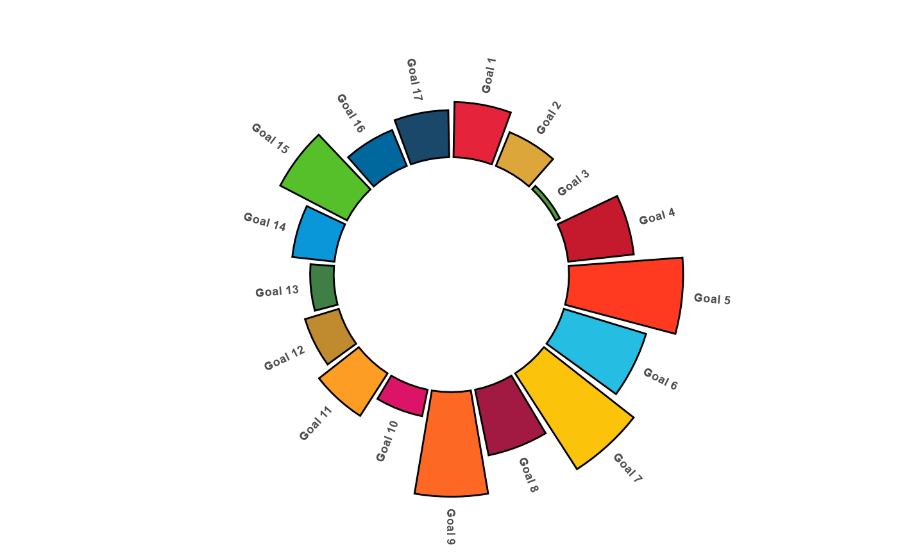

library(SDGsR)
library(tidyverse)
#> ── Attaching core tidyverse packages ──────────────────────── tidyverse 2.0.0 ──
#> ✔ dplyr 1.1.3 ✔ readr 2.1.4
#> ✔ forcats 1.0.0 ✔ stringr 1.5.0
#> ✔ ggplot2 3.4.3 ✔ tibble 3.2.1
#> ✔ lubridate 1.9.3 ✔ tidyr 1.3.0
#> ✔ purrr 1.0.2
#> ── Conflicts ────────────────────────────────────────── tidyverse_conflicts() ──
#> ✖ purrr::%||%() masks base::%||%()
#> ✖ dplyr::filter() masks stats::filter()
#> ✖ dplyr::lag() masks stats::lag()
#> ℹ Use the conflicted package (<http://conflicted.r-lib.org/>) to force all conflicts to become errorsTo create a circular frequency plot of data from the SDGs using the SDGs colour palette you can adapt this code.
First we simulate some data
# simulate data
Goals<-SDGsR::get_SDGs_goals_titles()
Goals=Goals %>%
rowid_to_column() %>%
rowwise() %>%
mutate(Papers=sample(c(0:100),1#,prob =c(0.3,0.19,0.08, 0.07,
# 0.06,
# 0.05,
# 0.05,
# 0.05,
# 0.05,
# 0.05,
# 0.05
# )
)
)Then we can plot this data using {ggplot2}.
# define the colours
clr=SDGsR::SDGs_cols(paste0("Goal",Goals$rowid))
# Make the plot
p <- ggplot(Goals, aes(x=as.factor(rowid), y=Papers)) + # Note that id is a factor. If x is numeric, there is some space between the first bar
# This add the bars with a blue color
geom_bar(stat="identity", fill=clr) +
# Limits of the plot = very important. The negative value controls the size of the inner circle, the positive one is useful to add size over each bar
ylim(-100,120) +
# Custom the theme: no axis title and no cartesian grid
theme_minimal() +
theme(
axis.text = element_blank(),
axis.title = element_blank(),
panel.grid = element_blank(),
plot.margin = unit(rep(-2,4), "cm") # This remove unnecessary margin around plot
) +
# This makes the coordinate polar instead of cartesian.
coord_polar(start = 0)
p
label_data <- Goals
# calculate the ANGLE of the labels
number_of_bar <- nrow(label_data)
angle <- 90 - 360 * (label_data$rowid-0.5) /number_of_bar # I substract 0.5 because the letter must have the angle of the center of the bars. Not extreme right(1) or extreme left (0)
# calculate the alignment of labels: right or left
# If I am on the left part of the plot, my labels have currently an angle < -90
label_data$hjust<-ifelse( angle < -90, 1, 0)
# flip angle BY to make them readable
label_data$angle<-ifelse(angle < -90, angle+180, angle)
# ----- ------------------------------------------- ---- #
# Start the plot
p <- ggplot(Goals, aes(x=as.factor(rowid), y=Papers)) + # Note that id is a factor. If x is numeric, there is some space between the first bar
# This add the bars with a blue color
geom_bar(stat="identity", fill=clr, colour="black") +
# Limits of the plot = very important. The negative value controls the size of the inner circle, the positive one is useful to add size over each bar
ylim(-100,120) +
# Custom the theme: no axis title and no cartesian grid
theme_minimal() +
theme(
axis.text = element_blank(),
axis.title = element_blank(),
panel.grid = element_blank(),
plot.margin = unit(rep(-1,4), "cm") # Adjust the margin to make in sort labels are not truncated!
) +
# This makes the coordinate polar instead of cartesian.
coord_polar(start = 0) +
# Add the labels, using the label_data dataframe that we have created before
geom_text(data=label_data, aes(x=rowid, y=Papers+10, label=paste0("Goal ",rowid), hjust=hjust), color="black", fontface="bold",alpha=0.7, size=2.5, angle= label_data$angle, inherit.aes = FALSE )
p
# ggplot(Goals, aes(x = datcall1.title, y = Papers,
# fill = clr)) +
# geom_bar(width = 0.9, stat="identity") +
# coord_polar(theta = "y") +
# xlab("") + ylab("") +
# ylim(c(0,100)) +
# #ggtitle("Top Product Categories Influenced by Internet") +
# geom_text(data = Goals, hjust = 1, size = 3,
# aes(x = datcall1.title, y = 0, label = paste0("Goal ", rowid))) +
# theme_minimal() +
# theme(legend.position = "none",
# panel.grid.major = element_blank(),
# panel.grid.minor = element_blank(),
# axis.line = element_blank(),
# axis.text.y = element_blank(),
# axis.text.x = element_blank(),
# axis.ticks = element_blank())